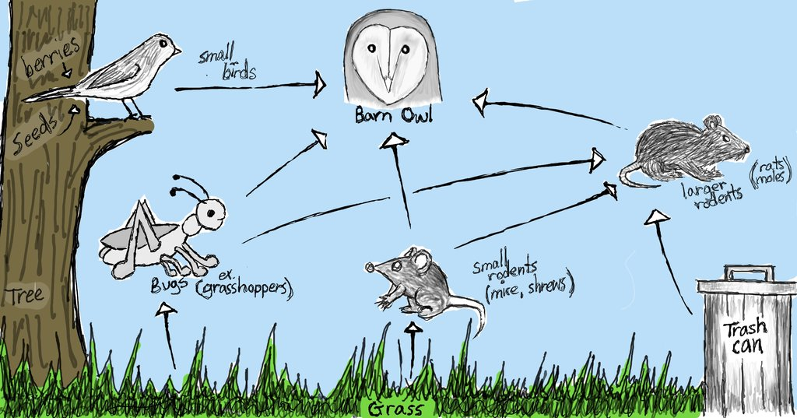
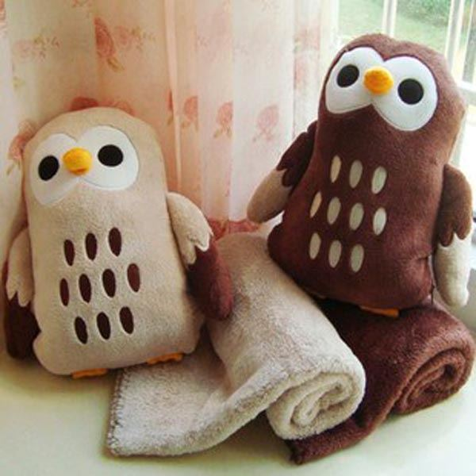

Welcome to the OWLs' WORLD.
Have no idea about OWLs?
Wanna pet an owl?
You will have tons of fun here.
Products
You can find three kinds of owl related products here: Photos, Food for Owls and Owl Dolls.
Photos
You think we look fun? Not always.
Owls are way amazing creature than you imagine. Enjoy the the fun they can bring to you. Owls are birds from the order Strigiformes, which includes about 200 species of mostly solitary and nocturnal birds of prey typified by an upright stance, a large, broad head, binocular vision, binaural hearing, sharp talons, and feathers adapted for silent flight.
Exceptions include the diurnal northern hawk-owl and the gregarious burrowing owl.Owls hunt mostly small mammals, insects, and other birds, although a few species specialize in hunting fish. They are found in all regions of the Earth except Antarctica and some remote islands.Owls are divided into two families: the Strigidae family of true (or typical) owls; and the Tytonidae family of barn-owls.
(Cited from https://en.wikipedia.org/wiki/Owl)
Food for Owls
What do Owls eat? Owls are Birds of Prey, which means that they must kill other animals to survive. Their diet includes invertebrates (such as insects, spiders, earthworms, snails and crabs), fish, reptiles, amphibians, birds and small mammals.
The main food largely depends on the species of Owl. For example, Scops and Screech Owls feed on insects mostly, while Barn Owls eat mainly mice, shrews and voles. Larger Owls such as the Eagle Owl will prey upon hares, young foxes and birds up to the size of ducks and gamebirds. Some species have specialised in fishing, such as the Asian Fish Owls and African Fishing Owls. Although certain species have these preferences for food type, most owls are opportunistic, and will take whatever prey is available in the area.
(Cited from http://www.owlpages.com/owls/articles.php?a=3)

Now you know the other side of owls.
Owl Dolls

Wanna have an owl doll rather a real, rat-fed owl? Here you go.
If you want to shop the owl dolls, here is where you should visit.